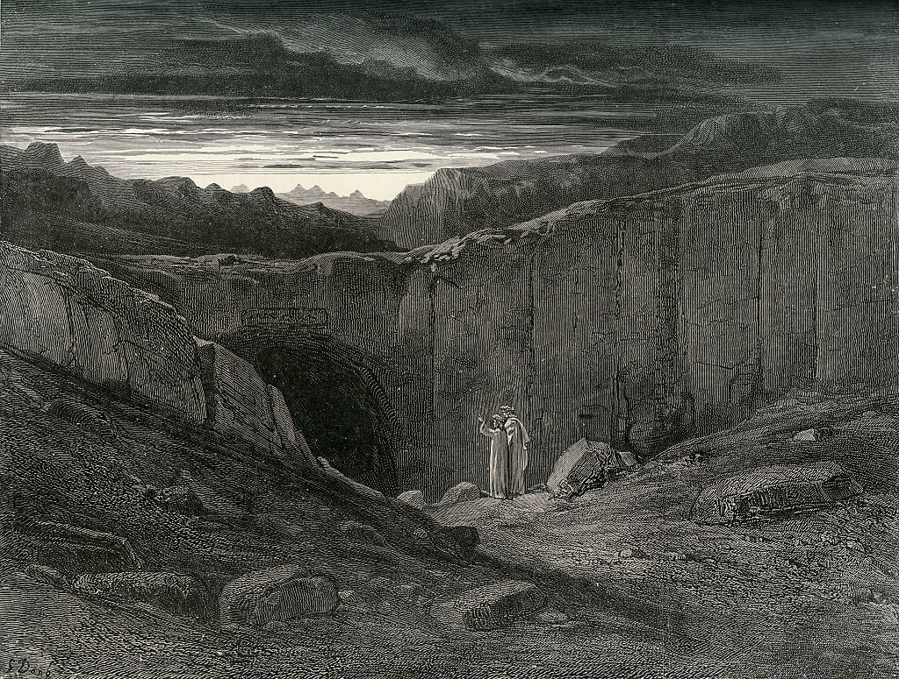

La narrazione prosegue nella settima bolgia dei ladri con scene di incredibile violenza metamorfica. Il centauro Caco giunge infuriato per punire Vanni Fucci. Dante assiste poi a mostruose fusioni e scambi di corpi tra anime fiorentine e rettili: gli uomini si trasformano in serpenti e i serpenti assumono sembianze umane, privando i peccatori persino della propria identità fisica.
Dante lancia un'invettiva contro Firenze prima di salire all'ottava bolgia, dove i consiglieri di frode sono avvolti da fiamme individuali. Una lingua di fuoco biforcuta racchiude Ulisse e Diomede. Sollecitato da Virgilio, Ulisse racconta il suo ultimo viaggio oltre le colonne d'Ercole, conclusosi con il naufragio della sua nave davanti alla montagna del Purgatorio.
